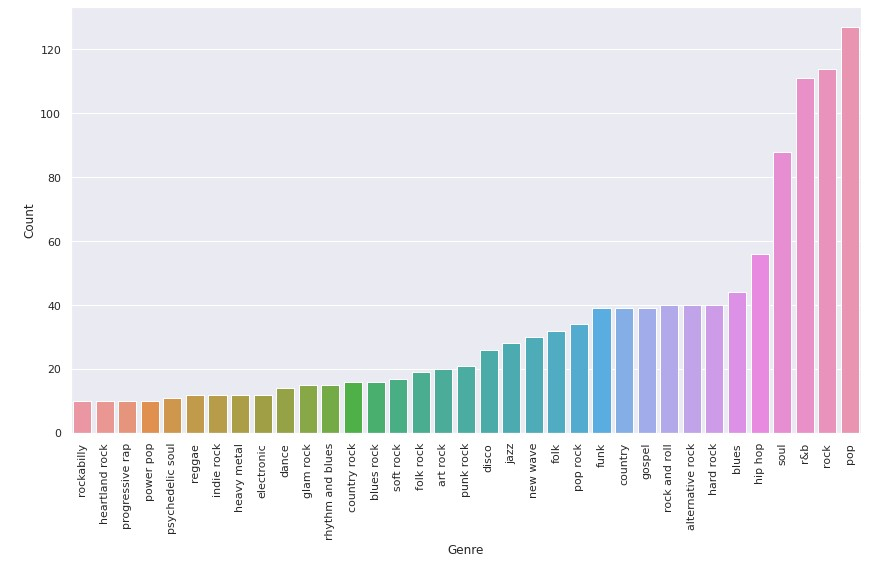
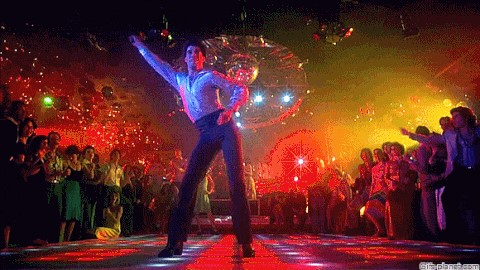

Evolution
Evolution in music, quite a wide topic. Where should we start? First of all, by getting a wide dataset. Rolling Stone magazine is going to help us. Rolling Stone is an American monthly magazine that focuses on music,politics, and popular culture. It was founded in San Francisco. The first magazine was released in 1967 and featured John Lennon on the cover and was published every two weeks ever since. It is known for provocative photography and its cover photos, featuring musicians, politicians, athletes, and actors.

In September 2021 they made a list of the 500 Greatest Songs of All Time. More than 250 artists, writers, and industry figures helped choose a brand-new list full of historic favorites, world-changing anthems and new classics. Here you can see how the 500 were selected. Thanks to this list we have the favorite songs for the last 50 years along with the singer and the year of production. So now it is time for some Social Graph magic!
There are two main studies that we are going to perform. One is focused on genres whereas the other one’s main subject is sentiment, singer’s feelings. Keep reading for both!
GENRE EVOLUTION
Thanks to our 500 top songs list we know what are the most known artists of all time. Now what we need is to find out the artist’s genre information. Wikipedia pages will tell us. Some pages were not easy to access automatically. So some magic-coding had to be done to extract the artists ourselves.
Now we have the genders played by all the singers in the list. There are nearly 200 hundred! The following graph shows the genres played by at least 10 artists.
Okay, so now we have the genres. But can we find the connections between them? Links between genres? Of course we can, Graphs please!
Artists become nodes and these nodes will be connected through the genres they play. To make it more visual we first color the nodes by year.
(we need more labels in the graph)
In this second graphs we color the nodes by rank and sized them by degree.
(photo of the graph but we need the labels on it)
The graph is very conected, and it is hard to see any groupings of nodes. But surprisingly in both of the graphs we see that there are two groups of nodes not as linked to the rest of the graph. And what is more surprisingly even is that this detachment from the main group does not depend either on the year or the rank on the list. So, who are these artists and what genre do they belong to?
We now want to find out what are the most played genres over the decades. How do we find this? How do we detect if the genre of an artist is close to the rest? Thanks to our graph and its links by genres we can calculate the centrality degree. A low degree centrality indicates that an artist is very different in terms of genre compared to the rest, while a high degree centrality indicates that an artist plays genres that are close to what others are playing.
With a bit of coding, we can calculate the degree centrality of each node. We add to each singer their correspondent degree and we divide the data by decade. Getting the highest degree per decade enables us to see some slight change in the most listened genres. Rock really kicked it hard in the 60’s and 70’s. Even smaller branches of rock were famous back then: art rock or glam rock for example. However, the change of millennium changed the preferences. Rock does not lead the highest degree chart now. Hip Hop and Pop are now at the top! Same happens with R&B and Soul; top position in the 60´s but slowly decreasing as we get to the XXI century.
But not everything is lost forever! Bob Dylan´s country in the 60’s reappears in 2015 thanks to…Taylor Swift! Red lips Juliets, ‘cause Country is another Love Story!

Generally speaking, there is a slight change between music genres over the last 50 years. It looks like before music was meant to be listened. Whereas now dance music is the new trend. How long will this Saturday Night Fever will last?
Sometimes, less is more. So to analyze genres in more detail we are going to only consider genres that are present in more than 40 artists. We will connect artist only I they share one of these genres. If they share multiple genres that we will color it by the most popular one.
Blues, Hip Hop, Soul, r&b, Rock and Pop are the winners. Let’s see how connected are they.
(add photo of graph but we still need the labels)
This graph tells quite a lot. Main genres, not surprisingly, are well connected but we can see that there are different communities formed; boundaries between genres of music are well defined. Also, in each community there are nodes from different years; this means that within each decade there are representatives of each type of music.
Also, as it was expected, these genres seem to be responsible for most of the connections in the graph. The structure has not changed much if we compare it to the previous one with all the genres.
Let’s now do the same exercise but the other way round. We get the least popular genres and we see how are they connected. We only get the genres that have less than 17 artists. We color the edges according to the genre they share. If they share multiple genres, we color them by the most popular genre.
There are more than 40 genres to explore. Shock rock, Latin pop or Britpop are some of them.